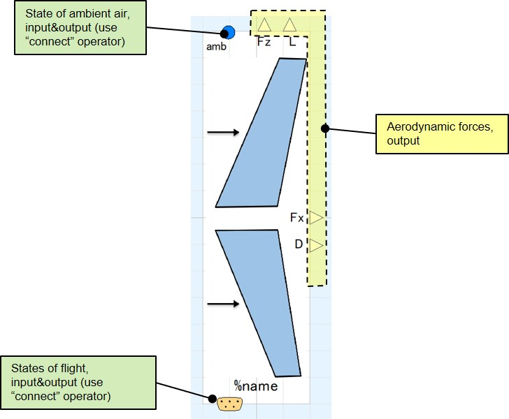

WingSimple00
calculates aerodynamic force on wing with given airfoil characteristics, flight states, and fluid property surrounding by simplest model.
Scope/Calculation function
- estimation of lift & drag or foces along wing's local frame.
Physical model/calculation method
- 2d airfoil aerodynamic coefficients are calculated.
- 2d aerodynamic coefficients are corrected into 3d wing aerodynamic coefficients.
- Wing's aerodynamic forces are calculated with 3d aerodynamic coefficients, conditions of ambient air, and flight states.
Limitations/Assumptions of model
- The 2d airfoil characteristics are calculated by simple 2d airfoil model, "AirfoilSimple00"
- The wing planform is trapezoid (straight, tapered).
- The wing has sweep, sweep effect is taken into account by simple formula.
- The taper effect is taken into account by user-set parameter, Oswalt efficiency factor, "effOsDes", not calculated as function of taper ratio.
- The compressibity effect (mach number correction) is taken into account with simplified formula.
Interface

Parameters
Read the descriptions on parameter window in model. This section only covers parameters which requires descriptions with figures.

Dependency
This component requires followings for operation
- package of medium must be redecleared.
Usage
***** under construction *****
Demo models
***** under construction *****